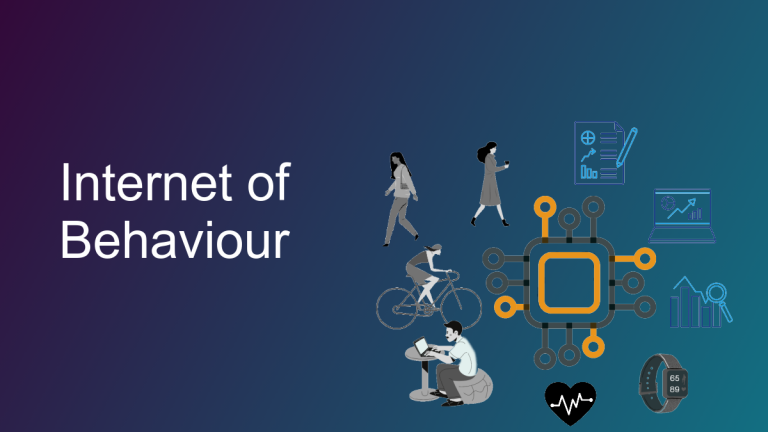
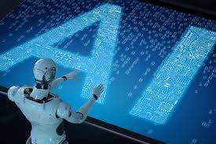

Blog
Trending Various Teachnology
Internet of behaviour
Posted on 23/5/2021
 IoB is a procedure through which user data in behavioral psychology is examined. Various approaches of the company in this is the basis for creating and encouraging innovative ways to user experience development (UX), search experience
improvement (SXO), and end goods and services for enterprises.The IoB impacts the decision of consumers but also redesigns the value chain. While certain users are careful about supplying their data, many more are glad to do so
as long as it delivers value — value based on data. In corporations, this includes being able to more successfully modify their image, promote things to their consumers or improve a product or service's Customer Experience (CX).The
IoB is a trending tecnology in the enviorment as well as in the internet world.
IoB's particular advantages are:
• Customers' purchase behavior on all platforms should be analyzed.
• Unattainable statistics on how people engage with technology and products have already been studied.
• Learn more about where a consumer is in the purchase procedure.
• Provide POS and targeting in real-time.
• Solve issues swiftly to close sales and satisfy consumers.
Artificial Intelligence
Posted on 23/5/2021
 Artificial intelligence is the on growing part of technology which is being developed in to a new version of technology every passing year. An AI is referred as the simulation of human intelligence in the machines which are programmed
to think and mimic their actions. The AI engineering is an emerging technological trend as the companies or any business related work is done through AI and AI engineering helps in the creation of the AI based applications like
facial recognition software is only use to identify facesGoogle is one of the companies that implemented the AI principle and it is at one of the most well-known company because it worked out so well. AI was created for the benefits
of the users and google has used it so well that it uses the AI to make the results more accurate for each and every users. Google also has always been focused on using and providing best result’s for every user. AI was used for
the easier life of the people you can speak with AI and ask question and it will find you answers and respond back prominent examples are like Siri, Alexa or google that are the voice assistance and it was designed by AI engineers.
AI is mostly related to the internet world as now days there is a huge impact of the AI.
the AI is an upcoming trend of the tecnology and the positive sides of this AI tech are as follows:
• Finance analyst: In Ohio University infographic will be launching an AI which can handle analytics in the near future. The idea was used from the google analytics technology. Helping in the specific business decisions in an expert manner is something
technology can do.
• Help desk: The business companies have their own website when a chat windows appear asking if you have question so that it can direct you further it is possible because AI is already in only help centers.
• Planning your schedule of your whole day is easy due to the voice assistance as just by giving a command you can schedule your time helping in saving time for the opportunities of expanding business.
• Market research is one of the major benefits as with the use of the old customers data and the campaign the AI might have an upper hand in the analytical decision making .
Cyber security
Posted on 23/5/2021

Cybersecurity is the on growing technology trend as the trojan virus and many other virus oppose a threat to the new technology ang the development in the world of internet is hightly risky. This is partly due to the constant emergence of new threats. To avoid a threat cyber security is their but the malicios hackers find a way to avoid the extrem meassures taken to avoid the virus and to get the unauthorized information. It's partly due to the adoption of modern technologies to improve defense. Since Cybersecurity will extend to guard against hackers as long as we have them, Cybersecurity will remain a popular technology.
About Me

Currently Student studying in computing feild .It is a small blog about teachnology that i have created the trending technology and their positive and negative impact